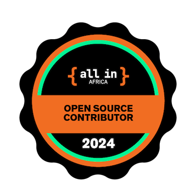

Version Control and Open Source: Building Better Together

Presented by Me
Who am i?

Software | Data👨🏿💻 | Open Source | Quality Control 🕵🏾♂️ | Pythonista🐍
What do i really DO 🤔?
In between Balancing a full-time role as an IP Technician at Telecom with freelance testing for a German firm. Additionally, I'm passionate about knowledge sharing and mentor aspiring developers at Elyambala Village.
Ok Lets talk about why we are Here today !

Version Control ⚙️
What is Version Control?
Version control, also known as source control, is a way to track and manage changes to software code over time.
How does it work?

Basic workflow: Commit, push, pull
Why is it important?
Version control is important because it allows you to keep track of changes to your code, collaborate with others, and revert to previous versions if needed.
So now let's talk about Git
Git is a distributed version control system that allows you to track changes to your code, collaborate with others, and manage your codebase.
Why should I use Git?
Git provides several benefits:
- Version control
- Collaboration
- Code management
How do I get started with Git?
Getting started with Git is easy:
- Install Git
- Configure Git
- Create a repository
- Commit changes
- Push changes
Git Commands
git init
git add .
git commit -m "Initial commit"
git push origin master
git pull origin master
But where is my code stored?
GitHub
GitHub is a web-based platform that allows you to host your code, collaborate with others, and manage your projects.
Why should I use GitHub?
GitHub provides several benefits:
- Code hosting
- Collaboration
- Project management
How do I get started with GitHub?
Getting started with GitHub is easy:
- Create a GitHub account
- Create a repository
- Push your code to GitHub
- Collaborate with others
What are some common GitHub features?
Some common GitHub features include:
- Issues - to track bugs and feature requests
- Pull requests - to propose changes to a repository
- Projects - to organize and prioritize work
- Actions - to automate workflows
GitHub Cli
GitHub CLI brings GitHub to your terminal. It reduces context switching, helps you focus, and enables you to more easily script and create your own workflows.
Most used GitHub Commands
Open Source
Open source software is software that is freely available to use, modify, and distribute.
Why should I contribute to Open Source?
apart from getting a cool badge like this

Contributing to open source has several benefits:
- Learn new skills
- Build your portfolio
- Collaborate with others
- Give back to the community
How do I get started with Open Source?
Getting started with open source is easy:
- Find a project
- Read the contribution guidelines
- Make a contribution
- Submit a pull request
Add the r-fit-text class to auto-size text
FIT TEXT
Fragments
Hit the next arrow...
... to step through ...
... a fragmented slide.
Fragment Styles
There's different types of fragments, like:
grow
shrink
fade-out
fade-right, up, down, left
fade-in-then-out
fade-in-then-semi-out
Highlight red blue green
Transition Styles
You can select from different transitions, like:
None -
Fade -
Slide -
Convex -
Concave -
Zoom
Themes
reveal.js comes with a few themes built in:
Black (default) -
White -
League -
Sky -
Beige -
Simple
Serif -
Blood -
Night -
Moon -
Solarized
Slide Backgrounds
Set data-background="#dddddd" on a slide to change the background color. All CSS color formats are supported.
Gradient Backgrounds
<section data-background-gradient=
"linear-gradient(to bottom, #ddd, #191919)">Image Backgrounds
<section data-background="image.png">Tiled Backgrounds
<section data-background="image.png" data-background-repeat="repeat" data-background-size="100px">Video Backgrounds
<section data-background-video="video.mp4,video.webm">... and GIFs!
Background Transitions
Different background transitions are available via the backgroundTransition option. This one's called "zoom".
Reveal.configure({ backgroundTransition: 'zoom' })Background Transitions
You can override background transitions per-slide.
<section data-background-transition="zoom">Iframe Backgrounds
Since reveal.js runs on the web, you can easily embed other web content. Try interacting with the page in the background.
Marvelous List
- No order here
- Or here
- Or here
- Or here
Fantastic Ordered List
- One is smaller than...
- Two is smaller than...
- Three!
Tabular Tables
| Item | Value | Quantity |
|---|---|---|
| Apples | $1 | 7 |
| Lemonade | $2 | 18 |
| Bread | $3 | 2 |
Clever Quotes
These guys come in two forms, inline: The nice thing about standards is that there are so many to choose from
and block:
“For years there has been a theory that millions of monkeys typing at random on millions of typewriters would reproduce the entire works of Shakespeare. The Internet has proven this theory to be untrue.”
Intergalactic Interconnections
You can link between slides internally, like this.
Speaker View
There's a speaker view. It includes a timer, preview of the upcoming slide as well as your speaker notes.
Press the S key to try it out.
Export to PDF
Presentations can be exported to PDF, here's an example:
Global State
Set data-state="something" on a slide and "something"
will be added as a class to the document element when the slide is open. This lets you
apply broader style changes, like switching the page background.
State Events
Additionally custom events can be triggered on a per slide basis by binding to the data-state name.
Reveal.on( 'customevent', function() {
console.log( '"customevent" has fired' );
} );
Take a Moment
Press B or . on your keyboard to pause the presentation. This is helpful when you're on stage and want to take distracting slides off the screen.
Much more
- Right-to-left support
- Extensive JavaScript API
- Auto-progression
- Parallax backgrounds
- Custom keyboard bindings